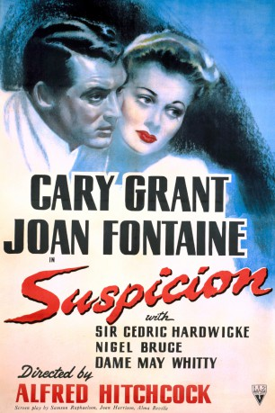
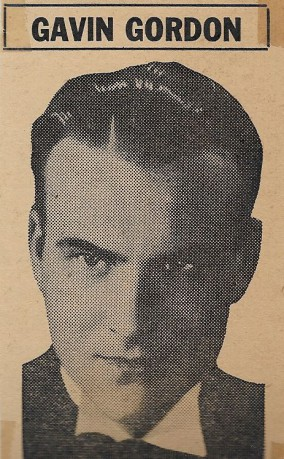
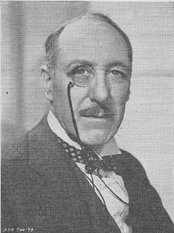

#4417 Hitchcock - Verdacht
Alternativ: Suspicion
Auszeichnungen: 1 Oscars gewonnen für 2 Oscars nominiert
 
 IMDB-Wertung: 7.4 / 10
IMDB-Wertung: 7.4 / 10  Metascore: 0
Metascore: 0 
Johnny Aysgarth ist ein attraktiver Spieler und Playboy, der sich unter anderem dadurch über Wasser hält, dass er ständig seine Freunde anpumpt. Beim Versuch, mit einem Dritte-Klasse-Ticket in der ersten Zugklasse zu reisen, lernt er die schüchterne Lina McLaidlaw kennen, eine zukünftige Millionenerbin. Sie verliebt sich in ihn und heiratet ihn schließlich gegen den Willen ihrer Eltern. Während der Hochzeitsreise entdeckt Lina Aysgarths wahren Charakter und hat einen bösen Verdacht, als Johnnys Freund und Geschäftspartner Beaky auf mysteriöse Weise ermordet wird.
Jahr: 1941
Dauer: 94 Minuten
FSK: 16
Land: Studio: An R K O Radio PictureTonspuren:
Untertitel:
Auflösung: 720p (1280x720) Größe: 2631 MB
Genre: Thriller, Mystery
Regisseur:  Alfred Hitchcock
Alfred Hitchcock
Drehbuch: Ron Oliver
Soundtrack:
Darsteller:
 Cary Grant als Johnnie
Cary Grant als Johnnie- Joan Fontaine als Lina
- Cedric Hardwicke als General McLaidlaw
- Nigel Bruce als Beaky
- Dame May Whitty als Mrs. McLaidlaw
- Isabel Jeans als Mrs. Newsham
- Heather Angel als Ethel, Maid
 Leo G. Carroll als Captain Melbeck
Leo G. Carroll als Captain Melbeck- Billy Bevan als Ticket Taker , uncredited
- Leonard Carey als Burton - McLaidlaws' Butler , uncredited
- Clyde Cook als Photographer , uncredited
-  Gavin Gordon als Dr. Bertram Sedbusk , uncredited
-  Lumsden Hare als Inspector Hodgson , uncredited
 Alfred Hitchcock als Man Mailing Letter , uncredited
Alfred Hitchcock als Man Mailing Letter , uncredited- Aubrey Mather als Executor of General Laidlaw's Will , uncredited
- Auriol Lee als Isobel Sedbusk
- Reginald Sheffield als Reggie Wetherby
- Faith Brook als Alice Barham , uncredited
- David Clyde als Trunk Man , uncredited
- Alec Craig als Hogarth Club Desk Clerk , uncredited
- Carol Curtis-Brown als Jessie Barham , uncredited
- Vernon Downing als Benson , uncredited
- Rex Evans als Mr. Bailey , uncredited
- Edward Fielding als Antique Shop Proprietor , uncredited
- Gertrude Hoffman als Mrs. Wetherby , uncredited
- Kenneth Hunter als Sir Gerald , uncredited
- Dorothy Lloyd als Miss Wetherby , uncredited
- Nondas Metcalf als Phyllis Swinghurst , uncredited
- Rita Page als Secretary , uncredited
- Hilda Plowright als Postmistress , uncredited
- Clara Reid als Mrs. Craddock , uncredited
- Maureen Roden-Ryan als Maid - Winnie , uncredited
- Violet Shelton als Mrs. Barham , uncredited
- Donald Stuart als Photographer , uncredited
- Denis Tankard als Footman , uncredited
- Pax Walker als Maid - Phoebe , uncredited
- Ben Webster als William Howe - Registrar , uncredited
- Elsie Weller als Miss Wetherby , uncredited
Datei: X:\Person\Hitchcock\Hitchcock - Verdacht (1941, FSK16, 1280x720).mkv seit 15.09.2016
Festplatte: HD Collection-7+mehr(A-Z)+Person
 Es gibt insgesamt 25 Filme in der Gruppe 'Person\Hitchcock'
Es gibt insgesamt 25 Filme in der Gruppe 'Person\Hitchcock'